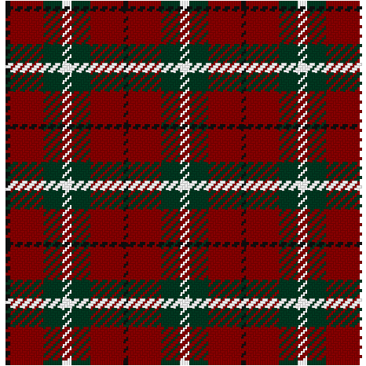

Computer Projects
Robotics Club Setup
Maker kits:
- Tools
- Build tray/mat (with edges, for roll-y parts)
- ESC bracelet
- Connector kits (JST PH) and crimpers for making cables
- Parts warehousing
- Tackle box with baggie system
- Documentation
- GoPro for video logging
- Rocket book
- DocOnce
- private git server
- Dev Environment
- Platforms
- IaaS: AWS Workspace
- PaaS: Platform.io
- Local: Raspberry Pi
- Software:
- Fritzing
- 3D CAD
- SolidPython (OpenSCAD) (because programming is better)
- DesignSpark Mechanical
- Opens .skp!
- But no linux
- Autodesk Fusion (but not free)
- Blockly
- Anaconda Python Env
- Atom
- Platforms
Projects:
- Init: Individual project options
- Basic battle bots
- Steampunk wearables
- Ornaments
- Main Missions: Group effort determined by vote
- Citizen science
- Tech-art integration
Requirements:
- Grades
- Portfolio
- Teacher recommendation
- Behavior
Coding DevEnv:
- Visual programming (blockly-scratch-mindstorm)
- Individual programming jobs with unit testing
- Agile - Kanban - scrum
- Arduino Studio must be installed locally, no good browser-based IDE (need to test PlatformIO though)
Home Internet Gateway
Description:
Cable modem, IoT gateway, wifi router/repeater, and firewall device.
User Story:
I just want the internet to work. I also want to protect my family and house, integrate with Domotics and IoT, and give the internet company their crap hardware back. Maybe I can even eventually dump the internet company completely for community-based wifi or a free-space optical link.
Feature Set:
Phasing:
- configure basic access point (check functionality after each step)
- Basic config shown here (first part only) including security (but not ufw firewall) set up shown here
- Use wlan1 instead of on-board wlan0
- Enable hostapd and dnsmasq logging
- Open network via hostapd conf shown here
- mod iptables to allow ssh in only
- check with nmap -sS -p 1-65535
- check with nmap -sS -p 1-65535
- set up sshd with best practices
- create a log of sites visited by MAC address
- set up tcpdump to save link headers to MySQL (see code below)
- The better option is to use a MITM proxy in transparent mode, but that requires users accepting and installing a certificate
- use dash to create BI reports of traffic
- link with MAC dbs and commonly-used domains DB
- set up Dynamic DNS (see code below)
- set up a DNS Sinkhole such as pi-hole or NoTrack to cut down on ads
- use OpenDNS to cut down on phishing and increase DNS lookup speeds (Has to be set up in dnsmasq using option 6)
- set up tor or a VPN
- set up config landing page
- Switch choice of wlan0 or eth0
- Tune filters, dyndns, dns sink
- Show dash traffic metrics
- Show status metrics (by user)
- set up config landing page
- swap cable modem
- add external storage with media library
- install othernet
- build FSO tranceivers
- Laser transmitter coupled to a photo transister receiver mounted on a spotting scope, with fiber optic modulators
BOM:
- Common Mobile Compute Platform (two, one for testing, one for production)
Notes:
GRAPHICS:
CODE:
CODE:
Arduino Wind Instrument
Description:
An inexpensive and simple electronic wind instrument to learn digital music programming
User Story:
Real instruments are expensive, and you can only learn to play music…
Feature Set:
- Breath and bite sensors
- Sax fingering
- Wireless midi port
- FOSS full synth with effects
Phasing:
- Pick up an Akai EWI
- Make a portable sound system
- Pick up the Zynthian kit parts
BOM:
- https://www.hifiberry.com/products/dacplus/
- https://www.amazon.com/BOSS-Audio-CE200M-Monoblock-Amplifier/dp/B0077IA7FG?th=1&psc=1
- https://www.amazon.com/Antigravity-Batteries-Battery-Starter-Charger/dp/B01L0F6K5C/ref=pd_aw_vtph_263_lp_tr_2/130-0236497-8146456?_encoding=UTF8&pd_rd_i=B01L0F6K5C&pd_rd_r=34b75632-85a1-11e9-9b09-4f16de09a724&pd_rd_w=rGCZ0&pd_rd_wg=hu7To&pf_rd_p=33304d62-e1a9-4538-a43c-b1d2dc49800d&pf_rd_r=1A8SNTZPHAMESVH6QJ0N&psc=1&refRID=1A8SNTZPHAMESVH6QJ0N
- https://www.adafruit.com/product/1601
- https://us.seeedstudio.com/5-inch-800x480-Capacitive-TouchScreen-p-2923.html?utm_source=Bazaar+%EF%BC%88%E7%94%B5%E5%95%86%EF%BC%89&utm_campaign=9162fdf13c-September+campaign+%E2%80%94%E2%80%94+1%24_9.21_Japanese_COPY_01&utm_medium=email&utm_term=0_4b071a49e3-9162fdf13c-49714817&ct=t()&mc_cid=9162fdf13c&mc_eid=3012c69022
Notes:
- https://hackaday.com/2014/09/18/a-diy-midi-wind-controller/
- https://gonzos.net/projects/ewi-pi/
- http://zynthian.org/
- https://ewiusb.com/software
Motocomms
Description:
A simple and mostly off-the-shelf communication and audio system for helmets
User Story:
Helmet comm units are stupid expensive and sound terrible. And are additive to road noise. And clumsy to control and link. And vendor specific. And another thing to keep charged. And dumb in concept: who’s wants a 5 hr running conversation when we just need to communicate when stopped at an intersection about which way to turn?
I want a way to use my noise-reducing earbuds with an off the shelf radio through my phone so that I can also hear music or GPS.
Also, I like to keep my phone in my jacket pocket so there are no dangling wires. But I don’t want to have to look at the radio to use it or worry about charging it before riding.
Feature Set:
- Custom radio integration
- GMRS appears to offer best license-free cost-vs-performance, with usable range of a couple miles and cross-compatibility with FRS
- Custom-built HAM radio?
- Mesh wifi?
- App-based mixer for phone for multi-audio stream management (GPS, music, and comms at once!)
- Custom handlebar control to only activate mic during push-to-talk, or switch it to VOX for regular hands-free, or turn off music
- Charging bracket
- Cross-use capable for skiing, hiking, trekking, and emergencies that are out of cell range
- Components that are cheap enough to keep spares of or available enough to find anywhere
Phasing:
- Start with wired connectivity, with phone and radio in tank bag (done):
- Noise-cancelling earbuds but mounting the microphone is the tricky bit
- Build stereo-line mixer to combine radio, phone, and earbuds
- Add handlebar switch to mic for PTT
- Add wireless integration
- Build radio mount with charge bracket
- Build custom Bluetooth audio adapter to connect radio to phone
BOM:
- TBD depending on radio
Commercial offerings:
- https://forums.radioreference.com/threads/would-a-gmrs-frs-radio-built-into-a-smartphone-or-battery-case-interest-you.394416/
- https://gotenna.com/
- https://beartooth.com
Track GDD
- Use a (google?) calendar of observations to track growing degree days
- User enters garden events on the google calendar when it happens (ie sunflowers bloom)
- Next season the garden events are predicted
- can start off with a database of “known” GDD events (crops, etc)
- can track other seasonal things like honeybee activity, pest occurance, etc
- The program uses an online API to pull daily min/max temperatures for user’s locale and calculate GDD for each observed event from previous seasons
- can use long-term temp forecasts to predict occurances of events
- Updates calendar of predicted events
- Host on pythonanywhere as a web service
- References
- Calculating GDD
- Local temperature
- Onset datalogger
- DarkSky API
Tartan designer
- A gui-based designer for weaving
- A great use-case and teaching example of using graphics and Programming
- https://docs.python.org/3.3/library/turtle.html

Somerlot Shooting Support System (S4)
Description:
Combination of hardware and software for calculations, capturing data, and visualizing shot placement
User Story:
Long range precision shooting requires accouting for many variables, as well as testing. Recording all this is cumbersome. Viewing the shot with a spotting scope is difficult. Waiting to go down-range and observe results makes for a lot of wasted time. Unknown weather, distance, and load variables wastes a lot of ammo. Can a bespoke computing platform simplify it all and make it more enjoyable, efficient, and cheap?
References:
Feature Set:
- Computes and then measures ballistics
- Variables for load, wind, pressure, distance (via GPS with point averaging)
- Trajectory Science lib
- stores data in a database
- Long-range wifi for networking back to phone
- Camera on target with webcam to phone, records placement in database
- Integrates with a chronograph like this one
Phasing:
- Get a ballistics algorithm figured out
- Create web-based UI
- Build out hardware
BOM:
- RPi
- Camera sensor with lens
Retail support tools
Scheduler
Basic example of a rule-based genetic algorithm optimizer for finding optimal group schedules
Rewards Program Calculator
- Description
- This application was developed to track customer spending, in order to determine eligibility for rewards certificates. It relies on data exported from the POS system, and does not in any way touch any databases.
- Usage
- Overview
- Assuming that you created the spreadsheet correctly, usage is pretty self explanatory. There are only 3 buttons. However, if the application crashes, it should prompt you to automatically send an error report via email to the developer (Chris).
- Input
- This application reads in an excel spreadsheet that was exported from the EaglePOS system, which must include sales YTD for each customer, as well as mailing info. If the application can’t find the necessary data, it should let you know.
- Output
- This is the secret part, and will be filled in later.
- Overview